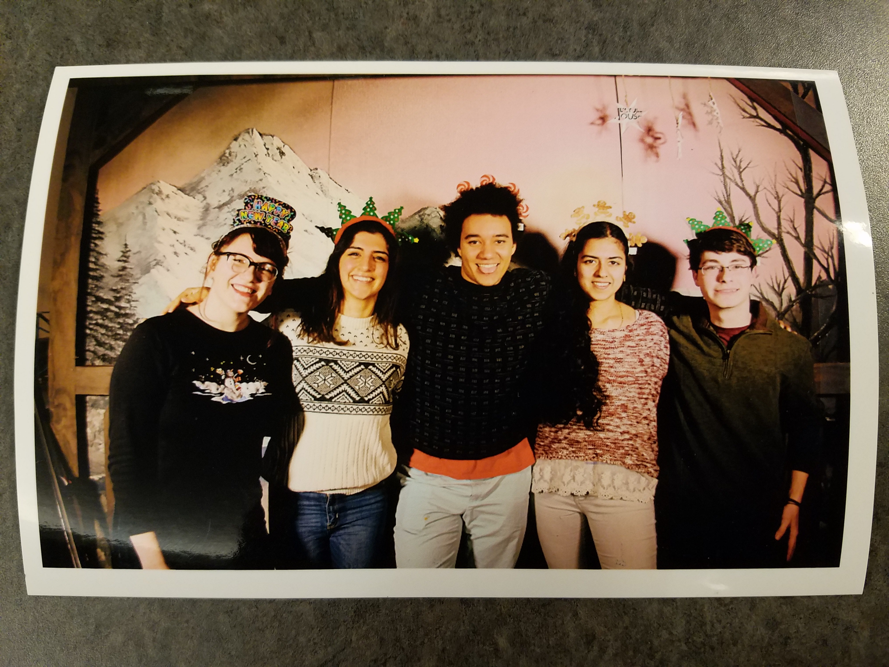

Sam has a vision
Ben is an aspiring computer scientist...err...roboticist...umm...maker...yeah...engineer. With experience in all three major disciplines, he enjoys making fully integrated systems that interact with their audience and make people say “wow” and smile. He worked on a bit of everything, from the design and CAD of the arm and wrist, to the Raspberry Pi setup and integration, wiring, and structuring the website. While the final product ended up meeting the team’s initial goals, Ben intends to take it even further for EXPO with refinement of systems and adding A E S T H E T I C.
Prava is majoring in ECE. What do those letters stand for? Who even knows . . . looking at Google it might mean Elephant Circus Entrapping or Elongated Citrus Expiring. Some people say it’s Electrical and Computer Engineering, but whatever. Her goals for PoE was learning more about software in general, learning more about Computer Vision, and more recently, learning about integration within subsystems. As for how she did - mostly okay - she worked on Computer Vision, control code, and integration right before demo day (technically not the last minute but also technically the very last minute). Outside of working on PoE, she enjoys working on PoE, thinking about PoE, and stressing out about PoE. Did we mention she did PoE. Anyways, she’s really sorry for this bio because it’s not funny at all, but sometimes funny just doesn’t come to you . . . err . . . her.
Sam has a vision
William is a young CS palio. He also enjoys copious amounts of math, physics simulations, and machine learning. He highly dislikes serial communication between computers and arduinos. He worked on the electrical and software subsystems, and as the likes and dislikes suggest, worked extensively on the mechanical simulations and serial communication. Had the project gone on any longer, his goals would’ve consist of adding machine learning to the arm, simulating the entire arm in mathematica, and gpu accelerating the cv code.
